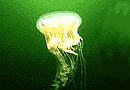

Giới Thiệu
|  | LÀM GÌ KHI BỊ SỨA BIỂN CHÍCH? |
| Biển đang vào mùa "cao điểm". Những con sứa vẫn luôn rình rập đâu đó để... chích cho bạn một cái. Vết chích nếu nghiêm trọng sẽ gây nhức đầu, co thắt cơ bắp, khó thở, nôn nao, ói mửa. Nếu biết cách, bạn có thể tự mình xử lý những tình huống không mấy dễ chịu này. | |
| Sứa biển có khả năng chích người bằng các tua dài chứa chất độc. Ngay cả khi những cái tua đã bị tiện đứt, chúng cũng có thể gây ra những vết thương trầm trọng cho người. Chỗ bị sứa biển chích thường sưng đỏ, có cảm giác nóng xung quanh. Trường hợp nhẹ không đáng ngại nhưng nếu nặng sẽ có những triệu chứng nhức đầu, co thắt cơ bắp... như đã kể trên. Các biểu hiện này nếu kéo dài không thuyên giảm thì cần đưa nạn nhân tới cơ sở y tế gần nhất để cấp cứu. Khi bị sứa biển chích, cần làm ngay những việc sau: - Dội ngay nước biển vào chỗ chích, không dùng nước ngọt vì nước ngọt sẽ kích thích những tế bào chứa gai nhọn truyền độc. - Dùng bàn tay, đã được quấn khăn, chà xát để lấy hết gai sứa ra. - Trung hoà các tế bào chứa gai nhọn nhằm làm giảm đau bằng cách dùng rượu (bất kỳ loại rượu nào có sẵn, nhưng rượu trắng là tốt nhất) hoặc dùng dấm dội lên vùng bị thương. - Chườm đá lên vùng bị thương nhằm làm giảm đau, bớt sưng tấy và ngăn không cho nọc độc lan ra. - Tại chỗ bị chích có thể dùng một loại histamin bôi hoặc kem hydrocortison nhằm làm giảm ngứa, giảm sưng. - Nếu còn đau nhức, có thể uống aspirin. Để chủ động xử lý khi bị sứa biển chích, những người đi tắm biển nên mang theo một số thuốc như thuốc làm giảm ngứa, giảm sưng, thuốc kháng sinh, thuốc trợ tim, thuốc chữa tiêu chảy và một chai dấm. BS Thuận Minh, KH&ĐS |
|